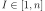
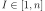
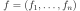

Gibbs¶
- class Gibbs(*args)¶
Gibbs sampling method.
Refer to Bayesian calibration, The Metropolis-Hastings Algorithm.
- Parameters
- samplerssequence of
MetropolisHastings List of samplers for each bloc of the chain
- samplerssequence of
Notes
Assume we want to sample from a complicated joint distribution. The Gibbs algorithm is a Markov Chain Monte-Carlo algorithm which sequentially calls samplers (implemented as
MetropolisHastingsobjects) of the conditional distributions of one or several components.Examples
>>> import openturns as ot >>> ot.RandomGenerator.SetSeed(0) >>> chainDim = 3 >>> # Observations >>> obsDim = 1 >>> obsSize = 10 >>> y = [-9.50794871493506, -3.83296694500105, -2.44545713047953, ... 0.0803625289211318, 1.01898069723583, 0.661725805623086, ... -1.57581204592385, -2.95308465670895, -8.8878164296758, ... -13.0812290405651] >>> y_obs = ot.Sample([[yi] for yi in y]) >>> # Parameters >>> covariates = ot.Sample(obsSize, chainDim) >>> for i in range(obsSize): ... for j in range(chainDim): ... covariates[i, j] = (-2 + 5.0 * i / 9.0) ** j >>> # Model >>> fullModel = ot.SymbolicFunction( ... ['p1', 'p2', 'p3', 'x1', 'x2', 'x3'], ... ['p1*x1+p2*x2+p3*x3', '1.0']) >>> parametersSet = range(chainDim) >>> parametersValue = [0.0] * len(parametersSet) # 0.0 is a placeholder >>> linkFunction = ot.ParametricFunction(fullModel, parametersSet, parametersValue) >>> # Calibration parameters >>> # Proposal distribution >>> proposal = ot.Uniform(-1.0, 1.0) >>> # Prior distribution >>> sigma0 = [10.0]*chainDim >>> # Covariance matrix >>> Q0_inv = ot.CorrelationMatrix(chainDim) >>> for i in range(chainDim): ... Q0_inv[i, i] = sigma0[i] * sigma0[i] >>> mu0 = [0.0]*chainDim >>> # x0 ~ N(mu0, sigma0) >>> prior = ot.Normal(mu0, Q0_inv) >>> # Conditional distribution y~N(z, 1.0) >>> conditional = ot.Normal() >>> # Create a Gibbs sampler >>> mh_coll = [ot.RandomWalkMetropolisHastings(prior, mu0, proposal, [i]) for i in range(chainDim)] >>> for mh in mh_coll: mh.setLikelihood(conditional, y_obs, linkFunction, covariates) >>> sampler = ot.Gibbs(mh_coll) >>> sampler.setBurnIn(20) >>> sampler.setThinning(10) >>> # Get a realization >>> mu = sampler.getRealization()
Methods
Accessor to the antecedent RandomVector in case of a composite RandomVector.
Get the length of the burn-in period.
Accessor to the object's name.
Accessor to the covariance of the RandomVector.
Accessor to the description of the RandomVector.
Accessor to the dimension of the RandomVector.
Accessor to the distribution of the RandomVector.
Accessor to the domain of the Event.
Accessor to the Function in case of a composite RandomVector.
Get the history storage.
getId()Accessor to the object's id.
getMarginal(*args)Get the random vector corresponding to the
 marginal component(s).
marginal component(s).getMean()Accessor to the mean of the RandomVector.
Get the list of Metropolis-Hastings samplers.
getName()Accessor to the object's name.
Accessor to the comparaison operator of the Event.
Accessor to the parameter of the distribution.
Accessor to the parameter description of the distribution.
Get the stochastic process.
Compute one realization of the RandomVector.
Get the posterior recompute flags.
getSample(size)Compute realizations of the RandomVector.
Accessor to the object's shadowed id.
Get the thinning parameter.
Accessor to the threshold of the Event.
Accessor to the object's visibility state.
hasName()Test if the object is named.
Test if the object has a distinguishable name.
Accessor to know if the RandomVector is a composite one.
isEvent()Whether the random vector is an event.
setBurnIn(burnIn)Set the length of the burn-in period.
setDescription(description)Accessor to the description of the RandomVector.
setHistory(strategy)Set the history storage.
setName(name)Accessor to the object's name.
setParameter(parameters)Accessor to the parameter of the distribution.
setShadowedId(id)Accessor to the object's shadowed id.
setThinning(thinning)Set the thinning parameter.
setVisibility(visible)Accessor to the object's visibility state.
- __init__(*args)¶
- getAntecedent()¶
Accessor to the antecedent RandomVector in case of a composite RandomVector.
- Returns
- antecedent
RandomVector Antecedent RandomVector
 in case of a
in case of a
CompositeRandomVectorsuch as: .
.
- antecedent
- getBurnIn()¶
Get the length of the burn-in period.
- Returns
- lengthint
Length of the burn-in period, that is the number of first iterates of the MCMC chain which will be thrown away when generating the sample.
- getClassName()¶
Accessor to the object’s name.
- Returns
- class_namestr
The object class name (object.__class__.__name__).
- getCovariance()¶
Accessor to the covariance of the RandomVector.
- Returns
- covariance
CovarianceMatrix Covariance of the considered
UsualRandomVector.
- covariance
Examples
>>> import openturns as ot >>> distribution = ot.Normal([0.0, 0.5], [1.0, 1.5], ot.CorrelationMatrix(2)) >>> randomVector = ot.RandomVector(distribution) >>> ot.RandomGenerator.SetSeed(0) >>> print(randomVector.getCovariance()) [[ 1 0 ] [ 0 2.25 ]]
- getDescription()¶
Accessor to the description of the RandomVector.
- Returns
- description
Description Describes the components of the RandomVector.
- description
- getDimension()¶
Accessor to the dimension of the RandomVector.
- Returns
- dimensionpositive int
Dimension of the RandomVector.
- getDistribution()¶
Accessor to the distribution of the RandomVector.
- Returns
- distribution
Distribution Distribution of the considered
UsualRandomVector.
- distribution
Examples
>>> import openturns as ot >>> distribution = ot.Normal([0.0, 0.0], [1.0, 1.0], ot.CorrelationMatrix(2)) >>> randomVector = ot.RandomVector(distribution) >>> ot.RandomGenerator.SetSeed(0) >>> print(randomVector.getDistribution()) Normal(mu = [0,0], sigma = [1,1], R = [[ 1 0 ] [ 0 1 ]])
- getDomain()¶
Accessor to the domain of the Event.
- Returns
- domain
Domain Describes the domain of an event.
- domain
- getFunction()¶
Accessor to the Function in case of a composite RandomVector.
- Returns
- function
Function Function used to define a
CompositeRandomVectoras the image through this function of the antecedent:
.
- function
- getHistory()¶
Get the history storage.
- Returns
- history
HistoryStrategy Used to record the chain.
- history
- getId()¶
Accessor to the object’s id.
- Returns
- idint
Internal unique identifier.
- getMarginal(*args)¶
Get the random vector corresponding to the
marginal component(s).- Parameters
- iint or list of ints,

Indicates the component(s) concerned.
 is the dimension of the
RandomVector.
is the dimension of the
RandomVector.
- iint or list of ints,
- Returns
- vector
RandomVector RandomVector restricted to the concerned components.
- vector
Notes
Let’s note
 a random vector and
 a set of indices. If
a random vector and
 a set of indices. If  is a
is a
UsualRandomVector, the subvector is defined by . If is a
. If is a
CompositeRandomVector, defined by with ,
 some scalar functions, the subvector is
some scalar functions, the subvector is
 .
.Examples
>>> import openturns as ot >>> distribution = ot.Normal([0.0, 0.0], [1.0, 1.0], ot.CorrelationMatrix(2)) >>> randomVector = ot.RandomVector(distribution) >>> ot.RandomGenerator.SetSeed(0) >>> print(randomVector.getMarginal(1).getRealization()) [0.608202] >>> print(randomVector.getMarginal(1).getDistribution()) Normal(mu = 0, sigma = 1)
- getMean()¶
Accessor to the mean of the RandomVector.
- Returns
- mean
Point Mean of the considered
UsualRandomVector.
- mean
Examples
>>> import openturns as ot >>> distribution = ot.Normal([0.0, 0.5], [1.0, 1.5], ot.CorrelationMatrix(2)) >>> randomVector = ot.RandomVector(distribution) >>> ot.RandomGenerator.SetSeed(0) >>> print(randomVector.getMean()) [0,0.5]
- getMetropolisHastingsCollection()¶
Get the list of Metropolis-Hastings samplers.
- Returns
- samplerssequence of
MetropolisHastings List of all Metropolis-Hastings samplers used in the Gibbs algorithm
- samplerssequence of
- getName()¶
Accessor to the object’s name.
- Returns
- namestr
The name of the object.
- getOperator()¶
Accessor to the comparaison operator of the Event.
- Returns
- operator
ComparisonOperator Comparaison operator used to define the
RandomVector.
- operator
- getParameter()¶
Accessor to the parameter of the distribution.
- Returns
- parameter
Point Parameter values.
- parameter
- getParameterDescription()¶
Accessor to the parameter description of the distribution.
- Returns
- description
Description Parameter names.
- description
- getProcess()¶
Get the stochastic process.
- Returns
- process
Process Stochastic process used to define the
RandomVector.
- process
- getRealization()¶
Compute one realization of the RandomVector.
- Returns
- aRealization
Point Sequence of values randomly determined from the RandomVector definition. In the case of an event: one realization of the event (considered as a Bernoulli variable) which is a boolean value (1 for the realization of the event and 0 else).
- aRealization
See also
Examples
>>> import openturns as ot >>> distribution = ot.Normal([0.0, 0.0], [1.0, 1.0], ot.CorrelationMatrix(2)) >>> randomVector = ot.RandomVector(distribution) >>> ot.RandomGenerator.SetSeed(0) >>> print(randomVector.getRealization()) [0.608202,-1.26617] >>> print(randomVector.getRealization()) [-0.438266,1.20548]
- getRecomputeLogPosterior()¶
Get the posterior recompute flags.
- Returns
- recompute
Indices Whether the posterior at the state received from the previous sampler is recomputed. For debug use only.
- recompute
- getSample(size)¶
Compute realizations of the RandomVector.
- Parameters
- nint,
Number of realizations needed.
- Returns
- realizations
Sample n sequences of values randomly determined from the RandomVector definition. In the case of an event: n realizations of the event (considered as a Bernoulli variable) which are boolean values (1 for the realization of the event and 0 else).
- realizations
See also
Examples
>>> import openturns as ot >>> distribution = ot.Normal([0.0, 0.0], [1.0, 1.0], ot.CorrelationMatrix(2)) >>> randomVector = ot.RandomVector(distribution) >>> ot.RandomGenerator.SetSeed(0) >>> print(randomVector.getSample(3)) [ X0 X1 ] 0 : [ 0.608202 -1.26617 ] 1 : [ -0.438266 1.20548 ] 2 : [ -2.18139 0.350042 ]
- getShadowedId()¶
Accessor to the object’s shadowed id.
- Returns
- idint
Internal unique identifier.
- getThinning()¶
Get the thinning parameter.
- Returns
- thinningint
Thinning parameter: storing only every
 point after the
burn-in period.
point after the
burn-in period.
Notes
When generating a sample of size
 , the number of MCMC iterations
performed is
, the number of MCMC iterations
performed is  where
where  is the burn-in period length
and
is the burn-in period length
and  the thinning parameter.
the thinning parameter.
- getThreshold()¶
Accessor to the threshold of the Event.
- Returns
- thresholdfloat
Threshold of the
RandomVector.
- getVisibility()¶
Accessor to the object’s visibility state.
- Returns
- visiblebool
Visibility flag.
- hasName()¶
Test if the object is named.
- Returns
- hasNamebool
True if the name is not empty.
- hasVisibleName()¶
Test if the object has a distinguishable name.
- Returns
- hasVisibleNamebool
True if the name is not empty and not the default one.
- isComposite()¶
Accessor to know if the RandomVector is a composite one.
- Returns
- isCompositebool
Indicates if the RandomVector is of type Composite or not.
- isEvent()¶
Whether the random vector is an event.
- Returns
- isEventbool
Whether it takes it values in {0, 1}.
- setBurnIn(burnIn)¶
Set the length of the burn-in period.
- Parameters
- lengthint
Length of the burn-in period, that is the number of first iterates of the MCMC chain which will be thrown away when generating the sample.
- setDescription(description)¶
Accessor to the description of the RandomVector.
- Parameters
- descriptionstr or sequence of str
Describes the components of the RandomVector.
- setHistory(strategy)¶
Set the history storage.
- Parameters
- history
HistoryStrategy Used to record the chain.
- history
- setName(name)¶
Accessor to the object’s name.
- Parameters
- namestr
The name of the object.
- setParameter(parameters)¶
Accessor to the parameter of the distribution.
- Parameters
- parametersequence of float
Parameter values.
- setShadowedId(id)¶
Accessor to the object’s shadowed id.
- Parameters
- idint
Internal unique identifier.
- setThinning(thinning)¶
Set the thinning parameter.
- Parameters
- thinningint,

Thinning parameter: storing only every
point after the
burn-in period.
- thinningint,
Notes
When generating a sample of size
, the number of MCMC iterations
performed is where is the burn-in period length
and the thinning parameter.
- setVisibility(visible)¶
Accessor to the object’s visibility state.
- Parameters
- visiblebool
Visibility flag.